Subscribe to our email newsletter to receive useful articles and special offers.
Experto en Técnicas Avanzadas de Comunicación Profesional
Experto en Técnicas Avanzadas de Comunicación Profesional
Los objetivos de este curso son:
Desarrollar los conocimientos de los profesionales del campo en materia de Comunicación Profesional.
Trabajar el análisis de la comunicación no verbal.
Profundizar los conceptos de la programación Neurolingüística y Asertividad, así como su aplicación.
Modulo 1
Comunicación Eficaz
Objetivos
Modulo 1 | Comunicación Eficaz
Distinguir entre comunicación formal e informal, sus tratamientos y la manera de atajar un rumor.
Analizar y describir las características de la comunicación empresarial
Asimilar las clavas para obtener credibilidad en la comunicación.
Definiciones
Modulo 1 | Comunicación Eficaz
Definiciones
Comunicación
Es una mera transmisión de información por medio del lenguaje, la
imagen y/o de la mímica, en el caso más sencillo de un individuo a otro
y en el más complejo de un grupo a otro grupo de individuos
En el SIGLO XXI, EL PRESENTE...
“La comunicación es una ciencia que estudia la interacción simbólica entre los seres humanos”
El acto de comunicación
Transmisión intencionada de un mensaje.
Se realiza mediante signos, que son:
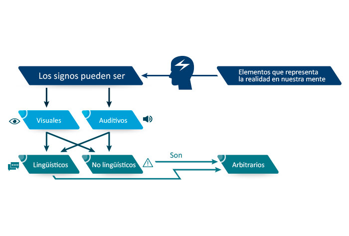
Esquema de comunicación
Modulo 1 | Comunicación Eficaz
Esquema de comunicación
Característica principal
Implica:
La participación de personas:
Para conocerla hay que tratar de entender la forma en que las personas se
relacionan unas con otras.
Un significado compartido:
Estar de acuerdo en cuanto a definiciones y términos empleados.
Símbolos:
Gestos, sonidos, letras, números, etc.
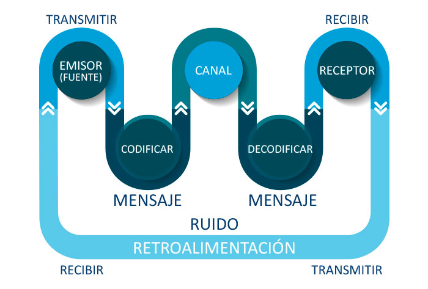
Recuerda siempre que:
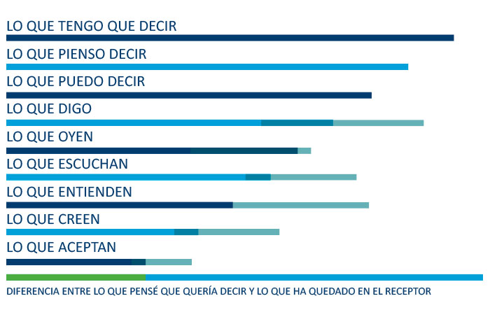
Tipos de comunicación
Modulo 1 | Comunicación Eficaz
Tipos de comunicación
Comunicación formal / informal
Las comunicaciones formales
Tipos de comunucación: formal e informal
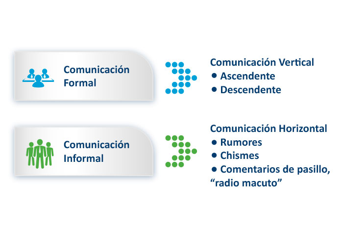
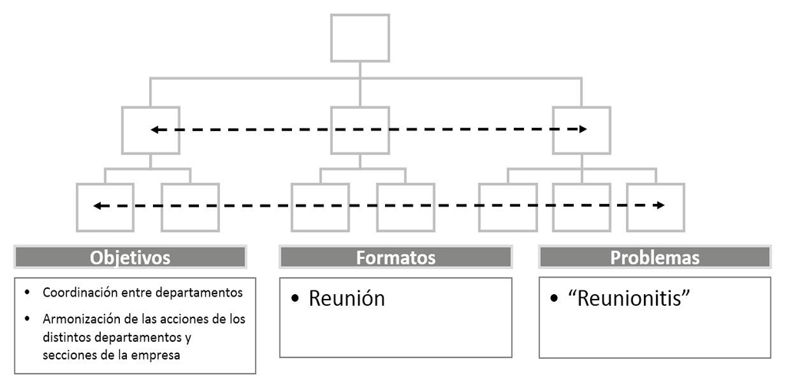
COMUNICACIÓN ASCENDENTE
Definición:
Las personas tienden a compartir solamente las buenas noticias
Con sus superiores y a eliminar las malas noticias, porque:
• Quieren parecer competentes.
• Desconfían de su jefe.
• Temen a que el jefe castigue al mensajero.
• Creen que ayudan a sus jefes si lo protegen de sus problemas.
• En ocasiones los jefes (a veces de manera inconsciente) así lo reclaman.
COMUNICACIÓN DESCENDENTE
Definición:
Carencia de información adecuada
• Sobrecarga de información.
• Falta de apertura entre mandos y empleados.
• Filtrado de la comunicación.
Canales de comunicación formal
- Comunicación vertical
• Se realiza a través de las estructuras jerárquicas establecidas en la organización
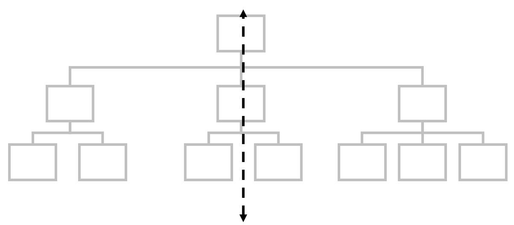
- Comunicación vertical descendente
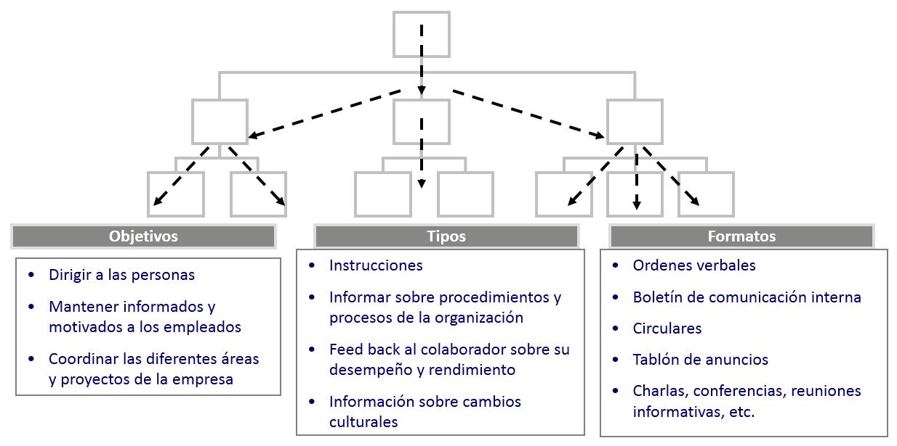
Problemas de la comunicación descendente:
1. El puenteo o By Pass
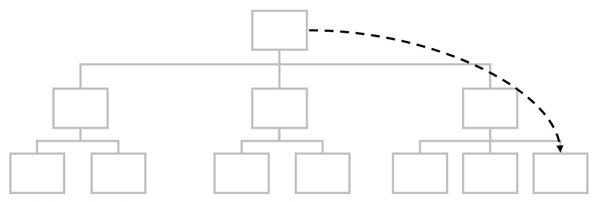
2. Demasiados eslabones en la cadena provocan la deformación del mensaje.
- Comunicación vertical ascendente
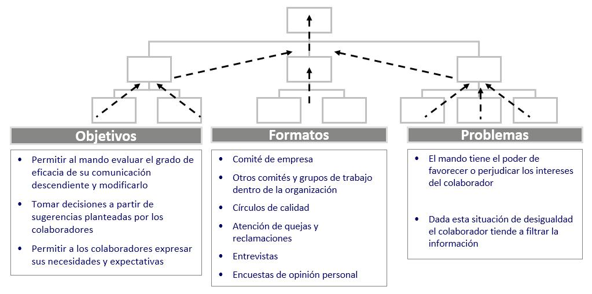
COMUNICACIÓN HORIZONTAL
Información compartida entre personas del mismo nivel jerárquico.
La comunicación horizontal tiene diversas funciones importantes:
• Permite compartir información, coordinar y resolver problemas entre las unidades.
• Ayuda a resolver conflictos.
• Permite la interacción entre iguales, proporciona apoyo social y emocional a las personas.
Todos estos factores contribuyen a la moral y a la eficacia
La comunicación informal
- Nace de la interacción social entre los miembros de la organización
- Es una actividad natural y espontánea que surge de la necesidad que sienten los empleados de saber qué sucede en su organización
- Hace circular información que normalmente no está disponible a través de las fuentes formales de comunicación
- Consiste en:
• Rumores
• Chismes
• Información de pasillo o “Radio Macuto”
- Los rumores, fundados o infundados, suelen ser muy perjudiciales para el funcionamiento de la organización.
- Normalmente distorsionan y exageran la realidad
- Hacen cundir el desánimo y la incertidumbre, y por tanto la preocupación y la desmotivación
- Si la comunicación descendente es veraz y fiable se convierte en el principal enemigo del rumor.
Los rumores
Modulo 1 | Comunicación Eficaz
OBJETIVOS QUE PERSIGUE EL RUMOR
Desestabilizar o desprestigiar a una persona u organización.
El rumor es definido como voz que corre entre el público, pero las características principales que lo definen son:
Mensaje interesante
Seductor
Ambiguo
Destinado a ser creído
Secreto.
Forma parte de todos nosotros
FUNCIONES DEL RUMOR
1.Como barómetro de la situación.
2.Como elemento de persuasión en la toma de importantes decisiones.
3.Función gratificante para los actores que lo emiten (nivel socioeconómico).
4.Como elemento de liderazgo (el poder de la información).
CÓMO ATAJAR EL RUMOR
Tomar medidas urgentes y de forma profesional:
Realizar una acción comunicativa que lo neutralice caracterizada, fundamentalmente, por:
La captación de la raíz del problema.
El acuerdo con una fuente de gran credibilidad.
Ej. Líder de opinión que desprestigie la información facilitada a través del rumor.
Lo ideal es diseñar e implantar un plan estratégico de comunicacióninterna, el cual garantice:
Credibilidad.
Transparencia.
Fluidez de la información.
Nuevas tecnologías
Modulo 1 | Comunicación Eficaz
EMAIL Y WHATSAPP
Han mejorado el intercambio de información de las organizaciones, presentando un desafío para las líneas de autoridad tradicionales.
Para algunos, dificultan la comunicación al no hacerse “cara a cara”à no hay retroalimentación:
Peligro de que las cosas queden “por escrito”.
Ponen en peligro el intercambio cultural à efecto paradójico, ya que no
Ponen en “comunicación directa” a los empleados.
MEDIOS ELECTRÓNICOS
Ventajas:
Distribución de más información.
Velocidad y eficiencia en la entrega de mensajes de rutina a grandes cantidades de personas a través de grandes áreas geográficas.
Inconvenientes:
Dificultad para resolver problemas complejos, que requieren interacción más amplia, cara a cara.
Incapacidad para captar claves sutiles, no verbales o de inflexión acerca de lo que el comunicador está pensando o transmitiendo.
COMUNICACIÓN EMPRESARIAL
Modulo 1 | Comunicación Eficaz
Perfil personal para persuadir e influir en el ámbito empresarial:
Es optimista y positivo.
Se mueve con facilidad entre las personas.
Considera los intereses y preocupaciones de los demás. Adapta su estrategia a esas necesidades.
Inmediatamente analiza los problemas e identifica en qué forma se ligan con las necesidades de la organización y de las personas, de forma que puede preparar argumentos claros para vender sus ideas a los demás.
Sabe cómo manejar la información general y los temas delicados y polémicos.
No demuestra impaciencia, ya que ello puede frustrar a las personas. El impaciente proporciona supuestos, conclusiones, soluciones demasiado pronto en el proceso mientras que los otros no han entendido el problema todavía.
Sé maestro más que un Dictador de Soluciones. Para ello:
Sepas argumentar. Para ello:
CREDIBILIDAD EN LA COMUNICACIÓN
Modulo 1 | Comunicación Eficaz
SE REFIERE A LA CREDIBILIDAD QUE EL EMISOR TENGA EN LA MENTE DEL RECEPTOR.
La credibilidad está sujeta a las circunstancias del contexto.
La credibilidad de un gerente será mucha si los demás lo perciben como persona conocedora, confiable y verdaderamente interesada por el bienestar de los demás.
Tu capacidad se asienta en:
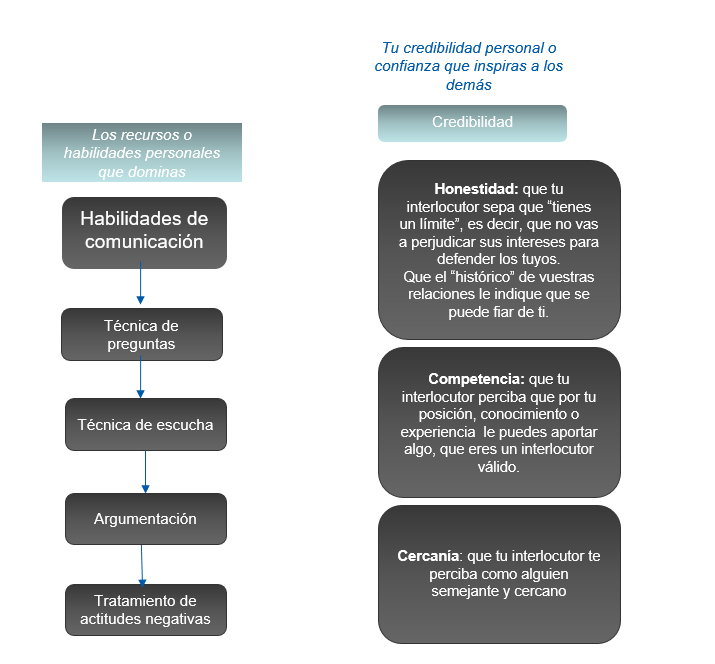
CREDIBILIDAD EN LA COMUNICACIÓN VERBAL
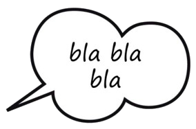
El lenguaje
Utiliza palabras claras, precisas y fáciles de comprender.
Haz hincapié sobre las palabras importantes.
Articula adecuadamente las palabras.
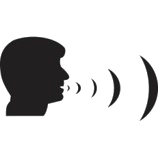
La voz
El tono de voz deberá ir cambiando dependiendo de la etapa de la conversación en que nos encontremos.
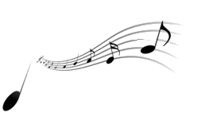
El estilo
En todas nuestras frases debemos intentar utilizar un estilo positivo evitando:
Coletillas: vale, mira, eh, claro, bueno, es que, resulta que, vamos a ver…
Expresiones dubitativas: quizás, es posible, puede ser…
El verbo intentar.
Expresiones que facilitan la negación por parte del interlocutor: ¿no conoce? ¿no hay nada que quiera mejorar? ¿no prefiere?
Expresiones que provocan agresividad: no exagere, está equivocado, no es cierto, no me lo puedo creer, le aseguro que, no me diga que no le interesa, le puedo demostrar que…
Depresiones vacilantes o dubitativas: podría ser, habría que pensarlo, me parece que, ya veremos, si… pero…
Expresiones de falsa confianza: entre nosotros, créame…
Expresiones de relleno: lo que quiero decir es que…
Justificaciones: esto no depende de mí, eso no es culpa de...
Las palabras más persuasivas:
Descubrir
Bueno
Dinero
Fácil
Garantizado
Nuevo
Comprobado
Resultados
Seguro
Ahorro
Mejor
Utilizar metáforas/ejemplos
Consiguen la atención:
Las imágenes son más eficaces que los datos y la lógica
Simplifican las ideas
A todos nos gustan los conceptos fáciles y sencillos de entender
Llegan al lado emocional:
Compramos a través de los sentimientos
Se recuerdan:
Pasado cierto tiempo se recuerdan mejor que los datos
Las reglas del lenguaje positivo:
Hable en presente, no en condicional ni en futuro.
Utilice el vocabulario claro y preciso. La palabrería provoca desconfianza.
Utilice la voz activa, en vez de la pasiva: no diga que “se está realizando una promoción entre nuestros clientes” sino que “estamos realizando una promoción entre nuestros clientes”.
Utilice oraciones positivas frente a negativas:
Aún no se han definido --> se definirán el año que viene.
Los archivos no están clasificados alfabéticamente --> Los archivos están clasificados numéricamente.
No estará hasta el viernes --> Estará el viernes.
TÉCNICA DE PREGUNTAS
Modulo 1 | Comunicación Eficaz
¿POR QUÉ PREGUNTAR?
Las buenas preguntas hacen pensar.
Mediante ellas se obtiene información.
Favorecen la conexión, es decir, “ver las cosas desde el punto de vista del interlocutor”.
Hacen hablar, lo que resuelve el problema de qué decir cuando no se nos ocurre nada.
TÉCNICA DE PREGUNTAS:
Tipos de preguntas:
Preguntas abiertas y preguntas cerradas
Preguntas cerradas:
Pueden contestarse con “si” o “no”. Son útiles para:
Verificar información
Confirmar que se ha comprendido bien
Solicitar permiso o autorización
Preguntas abiertas:
Comienzan por “cómo”, “cuándo”, “quién”, “qué”, “dónde”, “cuánto”, “cuál”. Mediante ellas:
Disponemos de información fiable y útil del interlocutor
Demostramos interés por el otro
Abrimos nuevos temas y caminos
Preguntas neutrales y preguntas de influencia
Preguntas neutrales:
No influyen ni manipulan la respuesta del interlocutor
“¿Qué quiere usted?”
Preguntas de influencia:
Tratan de obtener una respuesta determinada del interlocutor
TÉCNICAS DE ESCUCHA ACTIVA
Modulo 1 | Comunicación Eficaz
La escucha pasiva.
Como todos sabemos por experiencia, cuando tenemos un problema y encontramos a alguien que se calla y escucha, normalmente nos animamos a seguir hablando de nuestro problema. La buena disposición de la persona que escucha a mantenerse en silencio se interpreta generalmente como una prueba razonable de su interés. El silencio o escucha pasiva es un poderoso instrumento para hacer que las personas hablen de lo que les preocupa y el hablar a alguien que está dispuesto a escucharnos, puede ser el aliento que necesitamos para seguir adelante.
Utilización de monosílabos.
La mayoría de nosotros, para sentirnos escuchados, necesitamos algo más que una persona que nos escuche en silencio total. Deseamos tener pruebas de que la persona que escucha no está ocupada en sus propios pensamientos. Necesitamos reconocimientos ocasionales de que nuestros mensajes son recibidos, como los siguientes:
Si, ya, entiendo, ¿en serio?, etc.
Comunicación no verbal.
Por otra parte, en una comunicación no interviene solamente el lenguaje; interviene también toda la comunicación no verbal.
Nuestro cuerpo, manos, rostro, mirada, etc. se encuentran también en la conversación y no mirando a otro lado, echando vistazos disimulados al reloj, etc.
Reconocimiento.
Una de las formas más eficaces de escuchar es dejar que el otro perciba que le comprendemos, que respetamos su forma de pensar o sentir; sin hacer comentarios evaluativos (¡Eso es una tontería!).
Bien entendido que el reconocimiento del otro no implica darle la razón o negarse el derecho a no compartir sus ideas, actitudes, sentimientos, etc.
Abre-Puertas. Aperturas.
A menudo, todos necesitamos que la persona que nos escucha muestre realmente su disposición e interés en escuchar.
Estas invitaciones a seguir escuchando se expresan por formas como:
–Esto que me comentas es muy interesante…
–¿Qué has querido decir exactamente?.
–Es importante. ¿Qué más cosas te interesan conocer?
La escucha activa.
Si bien las aperturas, la escucha pasiva y las respuestas de reconocimiento ayudan a los personas a empezar a hablar, ninguna de ellas asegura al emisor que la persona que escucha verdaderamente entiende.
Hay otra forma de escuchar, especialmente útil cuando nos encontramos con un conflicto, negociación, etc., en la que está implicado no solamente el componente racional del mensaje sino también un intenso componente emocional y que además asegura que el otro ha entendido lo que se le ha querido transmitir; nos referimos a la escucha activa.
Muy brevemente podemos decir que la escucha activa consiste en resumir, sintetizar, compendiar las ideas centrales y especialmente los sentimientos del otro, pero sin añadir nosotros nada propio o personal. “El es el protagonista”.
La escucha activa no es compleja. La persona que escucha no tiene más que reformular en sus propias palabras la impresión que ha recibido de la expresión enviada por el emisor.
Es un error habitual confundir escucha activa con síntesis. Síntesis sería el resumen del mensaje central racional. Escucha activa sería el resumen, aceptándolo, del mensaje emocional.
Hay tres formas básicas de utilizar la escucha activa. Eco, Reformulación y Reflejo de Sentimientos.
Ninguna de ellas debe utilizarse con exclusividad y además en los momentos en que la conversación no fluye, podemos recurrir a otras técnicas como el abre-puertas.
Estas formas son:
Eco: Repetición textual de lo dicho por el otro.
Reformulación: Expresar con mis palabras lo que yo he captado de su mensaje racional y emocional.
Reflejo de Sentimientos: Expreso solamente el sentimiento que he percibido en el otro.
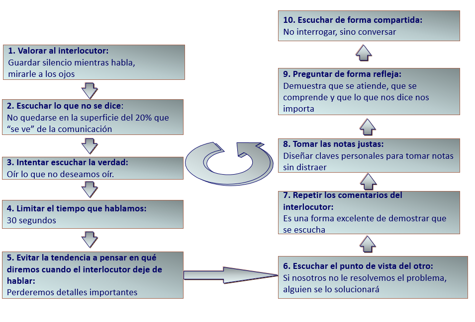
QUÉ HAY QUE HACER
Mirar a los ojos del interlocutor
Volver el torso hacia la persona con la que habla, señalando así que le presta atención continuamente
Hacer preguntas de vez en cuando que demuestren interés y que detallen más información
Afirmar con la cabeza
No interrumpir
QUÉ NO HAY QUE HACER
Estar haciendo otra cosa al mismo tiempo
Responder la pregunta cuando la persona aún está hablando
Interrumpir la conversación
Interpretar la frase de la persona sin estar seguro de lo que ha dicho
Pedir excusas inmediatamente cuando le hacen crítica
¡Al escuchar de forma activa demuestra al interlocutor que le está prestando atención!
SUPERVISIÓN EFECTIVA
Modulo 1 | Comunicación Eficaz
Los mandos que reciben mejores calificaciones exhiben varias características clave:
Comunican más información:
Dan aviso anticipado de los cambios inminentes.
Explican las razones que están detrás de las políticas y las reglas.
Disfrutan al conversar con sus subordinados.
Prefieren preguntar y persuadir antes que decir y exigir (pero son capaces de utilizar ambos estilos si es necesario).
Son sensibles a las necesidades y sentimientos de la gente:
Tienen cuidado de reprender a sus subordinados en privado y no en publico.
Están dispuestos a la escucha.
Simpáticos.
Responden con comprensión a todas las preguntas de sus empleados.
Consideran con justicia las quejas y sugerencias.
Están dispuestos a tomar las medidas convenientes sobre ellas.
PARTE DE LA OBSERVACIÓN
Los comunicadores efectivos son capaces de observar e interpretar correctamente las comunicaciones no verbales.
Una fuente vital de observaciones útiles procede de la visita a las distintas secciones para obtener una visión de primera mano.
Muchos ejecutivos se basan en los informes de campo y no viajan a lugares remotos para observar de primera mano lo que está sucediendo.
CLAVES PARA ESCUCHAR CON EFICACIA
Modulo 1 | Comunicación Eficaz
Encuentra un área de interés. Incluso si decides que el tema es aburrido, pregúntate a ti mismo: “¿qué puedo utilizar de lo que dice el orador?”.
Juzga el contenido, no la pronunciación o la forma de hablar en público del interviniente. Intenta aprender lo que el orador sabe.
Contrólate. En lugar de emocionarte de inmediato con lo que el orador parece estar diciendo, detente y evalúa hasta que comprendas el mensaje.
Escucha las ideas. No te quedes atrapado en los hechos y detalles; concéntrate en las ideas centrales.
Sé flexible. Ten varios sistemas para tomar notas y utiliza el que mejor se adapte al estilo del orador.
Resístete a las distracciones. Acércate a la persona que está hablando o pídele que hable más alto. No mires por la ventana ni revises los papeles que están sobre tu mesa.
Ejercita tu mente. Desarrolla motivación para un buen reto mental.
No dejes que las emociones interfieran en la compresión.
Capitaliza la velocidad de pensamiento.
Concéntrate en escuchar. No sólo te digas que estás poniendo atención, muestra interés. Escuchar bien es un trabajo arduo, pero los beneficios superan a los inconvenientes.
DECÁLOGO DE COMUNCIACIÓN EFECTIVA
Modulo 1 | Comunicación Eficaz
1.No critiques, no condenes, no te quejes.
2.Demuestra aprecio honrado y sincero.
3.Ponte en el lugar del otro: empatía.
4.Llama a las personas por su nombre.
5.El mejor conversador es quien escucha.
6.Habla siempre de lo que le interesa a los demás, no de lo que te interesa a ti.
7.Consigue con honestidad que la otra persona se sienta importante y que la idea es suya.
8.Discusión evitada es discusión ganada.
9.Respeta las opiniones de los demás. Un punto de vista diferente no quiere decir necesariamente error.
10.Admite sin rodeos tus propios errores.
Experto en Técnicas Avanzadas de Comunicación Profesional
Recuerda:
El objetivo del rumor es desestabilizar o desprestigiar a una persona u organización.
Para una correcta escucha activa se debe mirar a los ojos del interlocutor, afirmar con la cabeza y no interrumpir.
Mediante preguntas abiertas, obtendremos más información y abriremos nuevos caminos.